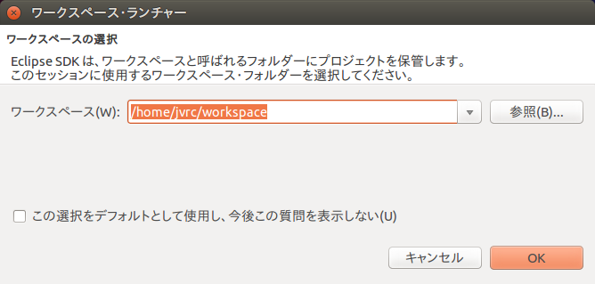

RTコンポーネントのコントローラの接続¶
ここではJVRC-1のモデルにRTコンポーネントのコントローラを接続し、ロボットの関節角度を取得できるようにします。
コントローラの雛形作成¶
RTCBuilderを使ってコントローラのソースコードの雛形を作成します。
RTCBuilderの起動¶
以下を実行してRTCBuilder(OpenRTP, Eclipseベース)を起動します。
$ openrtp
Eclipseが起動すると、ワークスペースの場所を尋ねられます。
Eclipseでは、各種作業を行うフォルダを「ワークスペース」(Work Space)とよび、原則としてすべての生成物はこのフォルダの下に保存されます。ワークスペースはアクセスできるフォルダであれば、どこに作っても構いませんが、このチュートリアルでは「/home/<ユーザ名>/workspace」をワークスペースとします。
そのままOKボタンを押してください。以下のようなWelcomeページが表示されます。

Welcomeページはいまは必要ないので左上の「×」ボタンを押して閉じてください。
右上の「パースペクティブを開く」ボタンを押し、プルダウンの「その他(O)…」ボタンを押します。
「パースペクティブを開く」ダイアログが表示されるので、「RTC Builder」を選択してOKボタンを押すことで、RTCBuilderが起動します。メニューバーに「カナヅチとRT」のRTCBuilderのアイコンが現れます。
注釈
RTCBuilderを起動する際に以下のエラーが生じることがあります。
パースペクティブ 'jp.go.aist.rtm.rtcbuilder.ui.perspective' のオープンで問題が発生しました。
RTCBuilderを起動した端末には以下のメッセージが出ているかと思います。
java.io.IOException: Couldn't get lock for rtcbuilder%u.log
既知のバグが影響している可能性があるので、対処方法として以下を行ってください。
logger.properties ファイルを作成して以下のようにログファイルパターンを記載しておく。
jp.go.aist.rtm.rtcbuilder.RTCBLogHandler.pattern=%h/.rtcb%u.log jp.go.aist.rtm.systemeditor.RTSELogHandler.pattern=%h/.rtse%u.log
起動時のオプションでこのファイルをロガークラスのコンフィギュレーションとして読み込ませて”openrtp”を起動する。
$ openrtp -vmargs -Djava.util.logging.config.file=$HOME/workspace/logger.properties
新規プロジェクトの作成¶
RTコンポーネントを作成するために、RTCBuilderで新規プロジェクトを作成する必要が有ります。プロジェクトを作成する方法は2種類あります。
画面上部のメニューから[ファイル]－[新規]－[プロジェクト]を選択 (Eclipse共通)
「新規プロジェクト」画面において，[その他]－[RTC Builder]を選択し、[次へ]をクリック
メニューバーの「RTCBuilder」のアイコンをクリック
どちらの方法でも、次のようなプロジェクト作成ウィザードが開始されます。「プロジェクト名」欄に作成するプロジェクト名(ここでは”RobotControllerRTC”)を入力して「完了」を押します。
指定した名称のプロジェクトが生成され、パッケージエクスプローラ内に追加されます。
生成したプロジェクト内には、デフォルト値が設定されたRTCプロファイルXML(RTC.xml)が自動的に生成されます。
プロファイル情報入力とコードの生成¶
RTCBuilderのエディタで、いちばん左の「基本」タブを選択し、基本情報を入力します。RTコンポーネントの仕様(名前)の他に、概要やバージョン等を入力します。ラベルが赤字の項目は必須項目です。その他はデフォルトで構いません。
| モジュール名: | RobotControllerRTC |
| モジュール概要: | Robot Controller component |
| バージョン: | 1.0.0 |
| ベンダ名: | AIST |
| モジュールカテゴリ: | Generic |
| コンポーネント型: | STATIC |
| アクティビティ型: | PERIODIC |
| コンポーネント種類: | DataFlow |
| 最大インスタンス数: | 1 |
| 実行型: | PeriodicExecutionContext |
| 実行周期: | 1000.0 |
次に「アクティビティ」タブを選択し、使用するアクションコールバックを指定します。
本コンポーネントでは、onActivated(), onDeactivated(), onExecute() コールバックを使用します。下図のように(1)コールバックをクリック後に(2)のラジオボタン”ON”にチェックを入れます。使用するコールバックごとに同様の手順で”ON”にしていきます。

さらに、「データポート」タブを選択し、データポートの情報を入力します。 以下のように入力します。なお、変数名や表示位置はオプションなのでデフォルトのままで構いません。
InPort プロファイル:
ポート名: q データ型: RTC::TimeDoubleSeq 変数名: angle 表示位置: LEFT OutPort プロファイル:
なし
次に、「言語・環境」タブを選択し、プログラミング言語を選択します。 ここでは、「C++」を選択します。なお、言語・環境はデフォルト等が設定されておらず、指定し忘れるとコード生成時にエラーになりますので、必ず言語の指定を行うようにしてください。
最後に、「基本」タブにある「コード生成」ボタンをクリックし、コンポーネントの雛型を生成します。

※ 生成されるコード群は、eclipse起動時に指定したワークスペースフォルダの中に生成されます。現在のワークスペースは、「ファイル(F)」 > 「ワークスペースの切り替え(W)...」で確認することができます。
コントローラのソースコード¶
コード作成操作により、コントローラのソースコード一式がワークスペース内の領域「$HOME/workspace/RobotControllerRTC/」に生成されます。
コントローラのヘッダファイル¶
コントローラのヘッダファイルは以下になります。
$HOME/workspace/RobotControllerRTC/include/RobotControllerRTC.h
※ 一部のコメント行は除去しています。
1 2 3 4 5 6 7 8 9 10 11 12 13 14 15 16 17 18 19 20 21 22 23 24 25 26 27 28 29 30 31 32 33 34 35 36 37 38 39 40 41 42 43 44 45 46 47 48 | /*!
* @file RobotControllerRTC.h
* @brief Robot Controller component
* @date $Date$
*
* $Id$
*/
#ifndef ROBOTCONTROLLERRTC_H
#define ROBOTCONTROLLERRTC_H
#include <rtm/idl/BasicDataTypeSkel.h>
#include <rtm/idl/ExtendedDataTypesSkel.h>
#include <rtm/idl/InterfaceDataTypesSkel.h>
using namespace RTC;
#include <rtm/Manager.h>
#include <rtm/DataFlowComponentBase.h>
#include <rtm/CorbaPort.h>
#include <rtm/DataInPort.h>
#include <rtm/DataOutPort.h>
class RobotControllerRTC
: public RTC::DataFlowComponentBase
{
public:
RobotControllerRTC(RTC::Manager* manager);
~RobotControllerRTC();
virtual RTC::ReturnCode_t onInitialize();
virtual RTC::ReturnCode_t onActivated(RTC::UniqueId ec_id);
virtual RTC::ReturnCode_t onDeactivated(RTC::UniqueId ec_id);
virtual RTC::ReturnCode_t onExecute(RTC::UniqueId ec_id);
protected:
RTC::TimedDoubleSeq m_angle;
InPort<RTC::TimedDoubleSeq> m_angleIn;
private:
};
extern "C"
{
DLL_EXPORT void RobotControllerRTCInit(RTC::Manager* manager);
};
#endif // ROBOTCONTROLLERRTC_H
|
今回、ヘッダファイルは変更しません。
RTC::TimedDoubleSeq というのは、時刻情報とdouble型の実際の値を持つOpenRTM固有の複合型です。 SeqはOpenRTMにおける配列型のように扱います。 OpenRTMにおけるdouble[]型と考えておけばよいでしょう。
InPort<RTC::TimedDoubleSeq> はRTCの入力ポートを表す型であり、入力ポートを操作するにはこれを利用します。 m_angleは入力ポートから関節角度を受けとるための変数です。 m_angleInで取得した値はm_angleで参照します。
コントローラのソースコード¶
コントローラのソースコードは以下になります。
$HOME/workspace/RobotControllerRTC/src/RobotControllerRTC.cpp
※ 一部のコメント行は除去しています。
1 2 3 4 5 6 7 8 9 10 11 12 13 14 15 16 17 18 19 20 21 22 23 24 25 26 27 28 29 30 31 32 33 34 35 36 37 38 39 40 41 42 43 44 45 46 47 48 49 50 51 52 53 54 55 56 57 58 59 60 61 62 63 64 65 66 67 68 69 70 71 | /*!
* @file RobotControllerRTC.cpp
* @brief Robot Controller component
* @date $Date$
*
* $Id$
*/
#include "RobotControllerRTC.h"
// Module specification
static const char* robotcontrollerrtc_spec[] =
{
"implementation_id", "RobotControllerRTC",
"type_name", "RobotControllerRTC",
"description", "Robot Controller component",
"version", "1.0.0",
"vendor", "AIST",
"category", "Generic",
"activity_type", "PERIODIC",
"kind", "DataFlowComponent",
"max_instance", "1",
"language", "C++",
"lang_type", "compile",
""
};
RobotControllerRTC::RobotControllerRTC(RTC::Manager* manager)
: RTC::DataFlowComponentBase(manager),
m_angleIn("q", m_angle)
{
}
RobotControllerRTC::~RobotControllerRTC()
{
}
RTC::ReturnCode_t RobotControllerRTC::onInitialize()
{
addInPort("q", m_angleIn);
return RTC::RTC_OK;
}
RTC::ReturnCode_t RobotControllerRTC::onActivated(RTC::UniqueId ec_id)
{
return RTC::RTC_OK;
}
RTC::ReturnCode_t RobotControllerRTC::onDeactivated(RTC::UniqueId ec_id)
{
return RTC::RTC_OK;
}
RTC::ReturnCode_t RobotControllerRTC::onExecute(RTC::UniqueId ec_id)
{
return RTC::RTC_OK;
}
extern "C"
{
void RobotControllerRTCInit(RTC::Manager* manager)
{
coil::Properties profile(robotcontrollerrtc_spec);
manager->registerFactory(profile,
RTC::Create<RobotControllerRTC>,
RTC::Delete<RobotControllerRTC>);
}
};
|
コントローラのビルド¶
コントローラの雛形が生成されましたので、この段階で一度ビルドできることを確認します。ビルドするにはRTコンポーネントのソースファイル一式が生成されたディレクトリで以下を実行します。
$ cd $HOME/workspace/RobotControllerRTC
$ mkdir build
$ cd build
$ cmake ..
$ make
コントローラの実装¶
生成されたのはコントローラの雛形で、このまま実行しても何も処理が行われません。onExecute() コールバックなどに処理を記述します。このチュートリアルでは関節角度を読みとって標準出力に表示する処理を実装します。
雛形に追加するコードの差分(diff)は以下の通りです。
patch コマンドで差分を適用する場合は、こちらの
差分ファイル を取得してご利用ください（同じファイルをsamples/tutorials/rtc/RobotControllerRTC.cpp.diffにも収録しております）。
1 2 3 4 5 6 7 8 9 10 11 12 13 14 15 16 17 18 19 20 21 22 23 24 25 26 | --- RobotControllerRTC.cpp.orig 2015-12-03 11:11:10.351220019 +0900
+++ RobotControllerRTC.cpp 2015-12-03 11:13:11.787219170 +0900
@@ -8,6 +8,9 @@
*/
#include "RobotControllerRTC.h"
+#include <iostream>
+
+using namespace std;
// Module specification
// <rtc-template block="module_spec">
@@ -109,6 +112,14 @@
RTC::ReturnCode_t RobotControllerRTC::onExecute(RTC::UniqueId ec_id)
{
+ if(m_angleIn.isNew()){
+ m_angleIn.read();
+ }
+
+ for(size_t i=0; i < m_angle.data.length(); ++i){
+ cout << "m_angle.data[" << i << "] is " << m_angle.data[i] << std::endl;
+ }
+
return RTC::RTC_OK;
}
|
onExecute()はRTCの実行中に定期的に呼ばれます。 ここで関節角度を取得し標準出力に表示する処理を行います。 m_angleIn.isNew()とは新しいデータが到着しているか確認する関数です。 onExecute()の実行時にはデータが到着しているかどうかが分からないので、ここでチェックしています。 新しいデータが来ていた場合にはm_angleIn.read()でデータを読み込みます。 読み込んだデータは自動的にm_angleに格納され、m_angle.dataとして取得できます。 m_angle.dataは各関節毎に配列の値となっています。
コントローラのインストール¶
RTコンポーネントの実装が終わったら、makeコマンドを実行して再度ビルドを行います。ビルドに成功するとRTCコントローラモジュール「src/RobotControllerRTC.so」が生成されるので、以下を実行してインストールします。
$ sudo mkdir -p /usr/lib/choreonoid-1.5/rtc
$ sudo cp -p src/RobotControllerRTC.so /usr/lib/choreonoid-1.5/rtc
注釈
Choreonoidでは読み込むRTCコントローラのモジュールは、Choreonoidのインストール先の共有ディレクトリ(/usr/lib/choreonoid-1.5/rtc)に配置するか、BodyRTCのプロパティで指定する際に絶対パスで指定する必要があります。
プロジェクトを開く¶
Choreonoid を起動します。
$ choreonoid
「メニュー」の「プロジェクトの読み込み」からJVRC-1用のプロジェクトファイルを読み込みます。プロジェクトファイル名は「サンプルファイルのインストール」でダウンロードしたリポジトリの「samples/tutorials/cnoid/sample1.cnoid」です。
コントローラの追加¶
まずアイテムビューで「JVRC」を選択します。 次に、[メニュー]-[ファイル]-[新規]-[BodyRTC]を選択し「BodyRTC」という名前で追加します。
BodyRTCを作成することにより、シミュレーション世界に存在するロボットが1つのRTコンポーネントとなり、データポートを介してセンサ情報の取得やアクチュエータに対する指令を送信することができるようになります。
コントローラの設定¶
プロジェクト上でRTコンポーネント(RTC)を作成しただけでは、ロボットの制御を行うことができません。
Choreonoidの操作画面に戻って、アイテムビューで「BodyRTC」を選択するとプロパティのタブ(プロパティビューと言います)にRTCの設定が表示されます。プロパティビューの「コントローラのモジュール名」を「RobotControllerRTC」とします。これは「コントローラのビルド」で作成したモジュールのパスと対応しています。さらに、プロパティビューの「自動ポート接続」を true にします。このプロパティがtrueの場合、BodyRTCとコントローラとして指定されたRobotControllerRTCのデータポートのうち、名称が同じポートについて自動的にポートの接続が行われます。

「設定モード」プロパティが「標準ポートを作成」になっていますが、この場合、標準的なデータポート（カメラ、レンジセンサを除くセンサに対応する出力ポート、関節角度列の出力ポート、関節トルクの入力ポート）が自動的に生成されます。これをRTSystemEditorを使って確認してみましょう。次のコマンドを実行してOpenRTPを起動します。
$ openrtp
必要に応じてワークスペースの指定を行い、RTCBuilderの時と同じ手順でRTSystemEditorパースペックティブを開きます。以下のような画面となるはずです。
画面左にあるName Service Viewにネームサーバに登録されている情報が表示されます。「127.0.0.1」の左にある黒い三角印をクリックするとツリーを展開することができます。ツリーを展開すると「JVRC|rtc」というアイテムがあるはずです。
ツールバーにある「ON」と書かれたアイコンをクリックし、System Diagramを生成します。続いてName Service Viewに表示された「JVRC|rtc」をドラッグし、System Diagramにドロップすると次のようなRTCが表示され、センサに対応するデータポートや関節トルクの指令を入力するためのデータポートが生成されていることがわかります。
シミュレーションを実行する¶
シミュレーションツールバーの「シミュレーション開始ボタン」を押します。シミュレーションを実行するとChoreonoidを実行している端末に関節角度(m_angle)の値が表示されるはずです。

またRTSystemEditorのName Service ViewからRobotControllerRTC0|rtcもSystem Diagramにドラッグアンドドロップすると、2つのRTCが次の図のように接続されていることが確認できます。2つのRTCはともに「q」という名前がついたデータポートを持っているために、自動ポート接続機能によって自動的に接続されています。
このようにして得られる関節角度を基にトルクをロボットに入力することでロボットの制御を行うことができます。この後のサンプルで詳しく解説します。
サンプルプロジェクトについて¶
このサンプルのプロジェクトファイルは「サンプルファイルのインストール」でダウンロードしたリポジトリの「samples/tutorials/cnoid/sample2.cnoid」に保存されています。